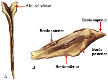
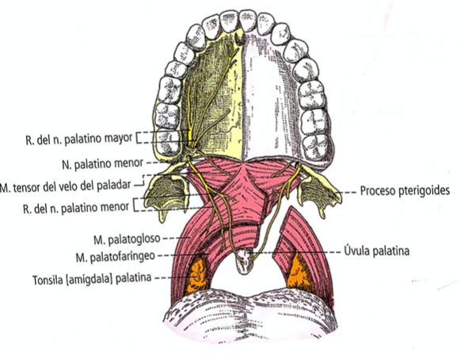

HUESO FRONTAL
Hueso único, mediano y simétrico que ocupa la parte mas anterior del cráneo. Esta situado por delante de los parietales, del etmoides y del esfenoides. Cierra la parte anterior de la cavidad craneal. Se articula por abajo con el etmoides, los huesos nasales, los cigomáticos, los lagrimales y los maxilares. Contribuye a unir al esqueleto del neurocraneo con el viscerocraneo; participa en la formación de cavidades nasales y orbitarias. A los lados de la porción nasal y arriba se encuentran los senos frontales que se abren en las cavidades nasales.
Descripción:
- Vista anterior: convexa hacia adelante. La cara temporal forma parte de la fosa temporal. En los jóvenes, en la línea media se observa la sutura frontal o metopica. Hacia abajo, presenta una eminencia roma, la glabela, de la cual emergen a sus lados los arcos superciliares. A los lados de la línea media se encuentran las eminencias frontales. En la parte inferior se hallan los bordes supraorbitarios, los cuales van desde el borde nasal (que se articula con el hueso lagrimal y maxilar) hasta una apófisis cigomática (articulada con el hueso cigomático). Allí se origina la línea temporal.
- Vista inferior: exocraneal.
- Porción nasal: presentan una escotadura etmoidal que recibe al hueso etmoides. Posee hemiceldillas de las cual entre ellas existen los surcos etmoidales, que junto al etmoides forman los conjuntos etmoidales anterior y posterior. En su borde nasal sobre la línea media se encuentra la espina nasal. Se observan dos canales, los orificios de los senos frontales, que completan las cavidades nasales.
- Porción orbitaria: lisas, amplias y cóncavas, Contribuyen a la pared superior de las cavidades orbitarias. Allí se encuentra la fosa de la glándula lagrimal y la fosita troclear.
- Vista posterior: endocraneal. Presenta una escama y una porción orbitaria. En la línea media están de arriba a abajo:
- El surco del seno sagital superior.
- La cresta frontal.
- El foramen ciego
- La escotadura etmoidal.
- Borde oribitonasal: en el tercio medial del borde supraorbitario, se encuentra la escotadura supraorbitaria. En su extremo medial el borde nasal y en el lateral la apófisis cigomática.
- Borde parietal: articula con el borde frontal de los huesos parietales.
- Borde esfenoidal: articula a cada lado con las alas menores del esfenoides.
HUESO PARIETAL
Hueso par, situado por detrás del frontal, encima del temporal y delante del occipital. Ocupa la porción laterosuperior de la calvaria.
Descripción
- Cara externa: exocraneal y convexa. En su parte medial presenta la eminencia parietal; por debajo las líneas temporales.
- Cara interna: intracraneal. La fosa parietal se corresponde con la eminencia parietal de la cara externa. En su superficie hay surcos que se dirigen y ramifican las cuales corresponden a la impresión de la arteria meníngea media y sus ramas. Hacia superior existe el semisurco que forma el surco del seno sagital superior junto con el parietal del lado opuesto. Se pueden encontrar además, las fositas donde se alojan las granulaciones aracnoideas. Posteriormente, el foramen parietal.
- Borde sagital: presenta un borde dentado para la sutura sagital.
- Borde escamoso: se articula con el esfenoides y el resto del temporal.
- Borde frontal: articula con el frontal (sutura coronal).
- Borde occipital: se articula con los bordes lamboideos de la escama del occipital (sutura lamboidea).
- Angulo frontal: forma con el parietal de lado opuesto y el frontal el bregma.
- Ángulo esfenoidal: forma parte del pterion.
- Angulo occipital: se articula con el parietal opuesto y la escama occipital, constituyendo la sutura lamboidea.
- Angulo mastoideo: se articula con la porción mastoidea del temporal y del occipital.
HUESO OCCIPITAL
Hueso único, mediano y simétrico, que corresponde a la parte posteroinferior del cráneo.
Descripción
- Cara posteroinferior: exocraneal y convexa, se desarrolla alrededor del foramen magno. Por este pasan los nervios accesorios, las arterias vertebrales y la transición bulbomedular. 3 porciones:
- Por delante del foramen magno: porción basilar. En la línea media, se observa el tubérculo faríngeo el cual presenta las crestas musculares. _ Por detrás del foramen magno: se encuentra la escama del occipital. En su línea media, la cresta occipital externa que termina en la protuberancia occipital externa. A ambos lados de ella esta la línea nucal superior y por debajo, la línea nucal inferior que finaliza en la apófisis yugular. _ A cada lado: eminencias articulares, cóndilos del occipital que se articulan con las carillas articulares superiores del atlas. En su extremo posterior, la fosa condílea. Atravesando la base de los cóndilos, el conducto del nervio hipogloso.
- Cara anterosuperior: intracraneal y cóncava:
- Por delante del foramen magno: canal cóncavo en sentido transversal, clivus cercano al foramen. A ambos lados de este se observa el surco del seno petroso interior.
- Por detrás: la escama del occipital se divide en 4 fosas: 2 superiores/cerebrales y 2 inferiores/cerebelosas. En el encuentro de las 4 se encuentra la eminencia cruciforme y en su centro la protuberancia occipital interna, allí esta la confluencia de los senos. La rama horizontal es el surco del seno transverso y la vertical es el surco del seno sagital superior. Esta continua con la cresta occipital interna y en ella se inserta la hoz del cerebelo.
- A los lados: el tubérculo yugular del occipital. Por debajo de este, el conducto del nervio hipogloso. En su sentido posterolateral, el surco del seno sigmoideo con su apófisis yugular.
- Borde lambdoideos: articulan con el parietal.
- Borde mastoideos: apófisis yugular articula con la porcion masteoidea del temporal.
HUESO TEMPORAL
Es un hueso par situado en la parte lateral media e inferior del cráneo que contiene el órgano vestíbulo vestíbulo coclear. Su forma varía con la edad en el feto y en el recién nacido se pueden identificar tres piezas óseas diferentes. 1. Porción escamosa: lámina, delgada de contorno semicircular que se encuentra por arriba y lateralmente. 2. Porción timpánica: situada por debajo de la presente, con forma de semi canal abierto hacia arriba. 3. Porción petrosa: situada por detrás abajo y medial a las otras dos, y que se desarrolla hacia delante y hacia el plano medio en forma de pirámide dirigida al centro de la base del cráneo.
Existen dos caras dispuestas en ángulo recto, la cara lateral y la cara inferior. Estas son las caras Exocraneales, corresponden a la parte exo craneal de la base del cráneo, se encuentra profundamente hundida por detrás del esqueleto facial.
La cara lateral de la cabeza presenta tres porciones; una posterior, la apófisis mastoides, una media centrada en torno al conducto auditivo externo, y otra anterior con la escama del temporal y la apófisis cigomática que se desprende de ella.
- Apófisis mastoides: pirámide ósea que se articula por detrás y por arriba con el hueso occipital. Se destacan numerosas rugosidades para inserciones musculares. La parte anterior está separada de la presente por la sutura Petroescamosa externa.
- Conducto auditivo externo(meato): constituido por dos partes; una inferior excavada en la porción timpánica, y una superior excavada en la parte inferior de la porción escamosa. Estos dos surcos que se dirigen e insertan en la membrana timpánica. Por delante está cerrado por la delgada capa ósea de la porción timpánica que lo separa de la fosa mandibular que es una cavidad glenoidea y de la articulación temporomandibular.
- Porción escamosa del temporal y la apófisis cigomática: ocupan la parte anterior de la cara externa, por arriba su borde superior redondeado y convexo la une al parietal y al ala mayor del esfenoides; inserta al músculo temporal. La apófisis cigomática se confunde hacia atrás con la cresta supramastoidea y hacia delante avanza sobre la fosa mandibular que está limitada por delante por el tubérculo articular y por detrás por el tubérculo cigomático posterior. La cara superior de la base del apófisis cigomática y su borde anterior son cóncavos, lo que permite el deslizamiento y la reflexión de las fibras posteriores del músculo temporal. En su parte inferior, da inserción al músculo masetero y por arriba recibe a la gruesa fascia temporal, por delante se articula con el hueso cigomático con el cual forma un puente ocio denominado arco cigomático.
La cara inferior se puede dividir también en tres porciones * Porción petrosa: presenta una serie de accidentes dispuestos a partir de la punta de la apófisis mastoides. Estos incluyen la incisura mastoideas, el surco de la arteria occipital, la apófisis estiloides, el foramen estilomastoideo; por donde emerge el nervio facial la fosa yugular ocupada por el bulbo superior de la vena yugular interna, y el orificio externo del conducto carotídeo. * Porción timpánica: constituye la pared inferior del conducto auditivo externo y la apófisis vaginal de la apófisis estiloides forma una vaina a la apófisis por delante de su base. * Porción escamosa: presenta la fosa mandibular para la articulación temporomandibular está limitada en sentido antero lateral por la raíz horizontal de la apófisis cigomática y el tubérculo articular. También tiene una fisura petrotimpánica por donde emerge la cuerda del tímpano. Tiene también el tubérculo articular, el conducto del músculo tubárico, el conducto para la trompa auditiva del conducto para el músculo tensor del tímpano.
Finalmente las caras intracraneales están constituidas por las porciones escamosa y petrosa. La porción escamosa se ubica en forma vertical. Tiene los surcos de la arteria meníngea media y sus ramas. La porción petrosa está separada y la porción escamosa por la fisura petroescamosa la cara anterior incluye el techo del tímpano, la eminencia arcuata el hiato del conducto para el nervio petroso mayor, y el dato del conducto para el nervio petroso menor. La cara posterior se relaciona con el cerebelo y el tronco del encéfalo, tiene un orificio auditivo interno; un conducto auditivo interno la fosa subarcuata, el orificio del acueducto vestibular, el surco del seno sigmoideo y el foramen mastoideo de la vena emisaria mastoideas. El borde superior de la porción petrosa separa las dos caras presentes. Da inserción a la duramadre de la tienda del cerebelo. El vértice de la porción petrosas se encuentra en contacto con el esfenoides y en él se observa el orificio interno del conducto carotídeo.
El hueso temporal contiene numerosas cavidades y conductos que pertenecen a diversos sistemas * Cavidades del órgano vestíbulo coclear: esto incluye el oído medio y el oído interno. * Conducto carotídeo: es el conducto vascular más importante que presenta el hueso por donde pasa la arteria carótida interna. * Conductos nerviosos: están destinados al pasaje de los nervios, estas incluyen el conducto facial que está ocupado por el nervio facial.
HUESO ESFENOIDES
Hueso impar, mediano y simetrico, situado como una cuña en la base del craneo, entre los huesos que lo rodean. Presenta un cuerpo central que se separan las alas menores, las alas mayores y las apofisis pterigoides.
Descripción
Cuerpo: posee una vista superior e inferior:
- Superior: fosa craneal.
- Parte anterior: formada por el yugo esfenoidal (unión alas menores). Se articula con la lamina cribosa del etmoides. Atrás limita con el limboesfenoidal y lateral con la cara superior de las alas menores.
- Parte media: detrás del yugo esfenoidal, un surco transversal, el surco prequiasmatico que termina con los conductos ópticos en la base de las alas menores. Detrás de este surco, la fosa hipofisaria de la silla turca.
- Parte posterior: constituida por el dorso de la silla turca. En sus extremos, las apófisis clinoides posteriores que junto a las apófisis clinoides anteriores de las alas menores, delimitan la silla turca. Bordes laterales, dos surcos: superior (nervio oculomotor y abducens) e inferior (seno petroso inferior).
- Parte anterior: formada por el yugo esfenoidal (unión alas menores). Se articula con la lamina cribosa del etmoides. Atrás limita con el limboesfenoidal y lateral con la cara superior de las alas menores.
- Inferior: nasofaringe. En plano medio, una cresta que forma el pico esfenoidal que articula con el vomer, constituyendo el conducto esfenovomeriano mediano. A los lados, la parte posterior de las cavidades nasales. Lateralmente, las apófisis pterigoides.
- Anterior: forma parte de las cavidades nasales. En la línea media, la cresta esfenoidal, en los lados, los senos esfenoidales y las hemiceldillas esfenoidales que completan las celdillas etmoidales posteriores.
- Posterior: articula con el occipital.
- Lateral: alas del esfenoides. Por encima de la base, el surco carotideo, impreso por el pasaje de la arteria carótida interna, alojada en el seno cavernoso. La cara lateral forma el borde interno de la fisura orbitaria superior.
- Alas Menores: Triangulares, se implantan a ambos lados del cuerpo por medio de raíces: una superior y una posteroinferior. Estas delimitan el conducto óptico por donde pasa el nervio óptico y la arteria oftalmológica. Su cara superior forma parte de la fosa craneal anterior. La inferior parte superoposterior de la cavidad orbitaria. El borde posterior forma la apófisis clinoides anterior.
- Alas Mayores: prolongan la parte lateroinferior del cuerpo.
- Cara cerebral: pertenece a la fosa craneal media.
- Cara orbitaria: forma la pared lateral de la cavidad orbitaria.
- Cara exocraneal: la divide la cresta infratemporal.
- Borde cigomático: articula con el hueso cigomático.
- Borde escamoso: articula con el temporal.
- Borde frontal y parietal: articulan con el frontal y el parietal.
- Borde medial: articula por detrás con el temporal y tiene 4 orificios: la fisura orbitaria superior (nervio oculomotor, troclear, abducens y 3 ramas del oftálmico), el foramen redondo (nervio maxilar), el foramen oval (nervio mandibular y rama de la arteria meníngea media), el foramen espinoso (arteria meníngea media) y el foramen petroso (nervio petroso menor).
- Apófisis pterigoides: se implantan medial y lateral en la cara inferior del cuerpo. Estas raíces circunscriben el conducto pterigoideo donde pasa el nervio del conducto pterigoideo. Las raíces se prolongan en laminas: medial y lateral.
HUESO ETMOIDES
Hueso único, mediano, simétrico. Delante del esfenoides y detrás de la escotadura etmoidal del frontal. Contribuye a la formación de las cavidades orbitarias y nasales.
Descripción
- Lamina perpendicular: distingue la apofisis crista galli y la lamina perpendicular. La apofisis, va desde el borde posterior del etmoides hasta el hoz del cerebro. El borde anterior presenta el foramen ciego. La lamina perpendicular, presenta un borde superior, uno inferior, anterior (espina nasal del frontal) y posterior (cresta esfenoidal y el vomer).
- Lamina cribosa: se articula con la escotadura etmoidal del frontal. La apofisis crista galli la divide en dos, los surcos olfatorios. Tiene orificios por donde pasan los nervios olfatorios, el etmoidal anterior y la arteria etmoidal anterior.
- Laberintos etmoidales: de los bordes lateral de la cribosa se proyectan los laberintos etmoidales, cuboides, interpuestos entre la cavidad nasal medialmente y la cavidad nasal lateralmente. Presentan 6 caras: superior (celdillas etmoidales medias), anterior (celdillas etmoidales anteriores), posterior (meato nasal superior), inferior (el meato nasal medio y la apofisis unciforme), lateral (lamina orbitaria) y medial (cornetes nasales superior y medio, hiato semilunar).
HUESO MAXILAR INFERIOR:
La mandíbula o el maxilar inferior es un hueso simétrico impar y mediano. Es móvil, situado en la parte inferior de la cara tiene un cuerpo de forma cóncava hacia atrás semejante una herradura, y sus extremos se dirigen verticalmente hacia arriba formando con el cuerpo un ángulo casi recto.
En el cuerpo se distinguen dos caras y dos bordes.
- Cara externa: presenta una sínfisis mandibular, por debajo de ésta se encuentra la protuberancia mentoniana lateralmente, y hasta atrás se hace el foramen mentoniano a la altura de la implantación del segundo premolar (nervios y vasos mentonianos).
Cara posterior: se presenta un surco que corresponde a la sínfisis mandibular, tiene salientes de inserción las espinas mentoniana donde se insertan músculos milohioideo y el músculo constrictor superior de * la faringe. También se observa una fosita sublingual y por debajo la fosita submandibular. * Borde superior: es el arco alveolar y recibe a las raíces dentarias, sus cavidades están separadas por los tabiques interradiculares donde se insertan los ligamentos dentarios. * Borde inferior: es redondeado, cerca de la línea mediana se observa la fosa digástrica donde se inserta el músculo digástrico.
Con respecto a la estructura de la mandíbula es un hueso muy sólido. Está tapizado por una lámina bastante densa de hueso esponjoso que rodea a los alvéolos dentarios el centro del cuerpo presenta el conducto mandibular.
HUESO CIGOMATICO
Es solido arbotante situado entre el maxilar y el frontal, el ala mayor del esfenoides y la apófisis cigomática del hueso temporal. Forma el esqueleto del pomulo.
Descripción
- Vista lateral: lisa, convexa. Terminación del foramen cigomaticofacial.
- Vista medial: cóncava. Forma parte de las fosas temporal e infratemporal. Se destaca la apófisis frontal del cigomático; y se articula por arriba con el frontal. Presenta el foramen cigomático-orbitario.
- Borde anterosuperior: cóncavo. Forma el borde lateral e inferior de la orbita.
- Borde posterosuperior: se continua con el borde superior de la apófisis cigomática.
- Borde anteroinferior: limita la superficie de la articulación con el maxilar.
- Borde posteroinferior: rectilíneo, rugoso y grueso.
- Ángulos: se articula superior, con el frontal, inferior, con la apófisis cigomática, anterior, con la orbita, y posterior con la apófisis cigomática.
HUESO NASAL:
Pequeñas laminas unidas en la línea mediana. Están situados entre las apófisis frontales del maxilar, en la sutura frontonasal.
Descripción
- Vista superficial: cara subcutánea, convexa transversalmente, cóncava en la parte superior.
- Vista profunda: cara profunda o nasal. Forma parte de la parte anterior de la bóveda de las cavidades nasales.
- Borde superior: articula con el frontal y su espina nasal.
- Borde inferior: se une al cartílago de la nariz.
- Borde anterior: articula con la espina nasal del frontal, con la lamina perpendicular del etmoides y con el hueso nasal opuesto.
- Borde lateral: articula con la apófisis frontal del maxilar.
HUESO MAXILAR SUPERIOR
Hueso par que participa en la constitución de la orbita, bóveda palatina, las cavidades nasales y la fosa infratemporal. Una apófisis palatina une al maxilar de un lado con su homónimo opuesto, formando parte del paladar óseo. Los maxilares reunidos presentan un contorno inferior en forma de arco, donde se ubican los alveolos, para los dientes superiores.
Descripción
Vista medial: se destaca una saliente horizontal, la apófisis palastina. Presenta una cavidad superior que forma el piso de la cavidad nasal y una inferior que constituye el paladar óseo. Su borde lateral es donde se implanta en el maxilar y su borde medial se une al del lado opuesto, formando la cresta nasal. Esta termina y se articula con la espina nasal anterior, donde por detrás con el otro maxilar forma el conducto incisivo donde pasa el nervio y arteria nasopalatino. La apófisis palatina se divide en:
- Porción suprapalastina: centrada en el hiato maxilar. Por delante de este esta el surco lagrimal, este esta limitado por la apófisis frontal del maxilar que presenta la cresta de la concha. Encima de esta esta la cresta etmoidal que articula con el cornete nasal medio y el etmoides.
- Porción infrapalastina: participa en la formación del paladar óseo.
Vista lateral: Se observa encima de los incisivos la fosa canina, limitada por la eminencia canina. Detrás de esta, esta la apófisis cigomática que se une por su base al resto del hueso. En esta se describen:
- Cara orbitaria: forma parte de la pared inferior de la cavidad orbitaria. Separada del ala mayor del esfenoides por la fisura orbitaria inferior. El conducto infraorbitario aloja al nervio maxilar.
- Cara anterior: presenta el foramen infraorbitario, donde emerge el nervio infraorbitario. Debajo de este esta la fosa canina.
- Cara infratemporal: convexa. Medialmente, la tuberosidad del maxilar y lateralmente, la fosa infratemporal. Presenta forámenes alveolares.
- Borde anterior: emerge debajo de la espina nasal anterior. Termina en la apófisis frontal.
- Borde posterior: constituye la tuberosidad del maxilar. Parte anterior del temporal y articula con el palatino.
Borde infraorbitario: articula con el lagrimal, el etmoides y el palatino.
HUESO LAGRIMAL:
Hueso par, situado en la cara medial de cada cavidad orbitaria, entre el frontal, el etmoides y el maxilar. Es una lamina ósea, delgada e irregular.
Descripción
Cara lateral: se observa la cresta lagrimal posterior, que termina en el gancho lagrimal que forma parte del orificio superior del conducto lagrimonasal. Esta cara esta dividida en 2: la posterior (lamina orbitaria del etmoides) y la anterior (conducto lagrimonasal).
Cara medial: creta de la cara lateral. En la parte posterior se articula con el etmoides, completando las celdillas etmoidolagrimales. La parte anterior contribuye a las cavidades nasales.
Borde superior: articula con el borde nasal del frontal.
Borde inferior: forma el conducto lagrimonasal
Borde anterior: articula con la apófisis frontal del maxilar.
Borde posterior: articula con la lamina orbitaria del etmoides.
HUESO PALATINO
Hueso par y profundo, contribuye a formar la bóveda palatina, la cavidad nasal, la orbita y la fosa pterigopalatina.
Descripción
Esta formado por una lamina horizontal que constituye la parte posterior del paladar óseo y una lamina perpendicular que se une a la anterior. Presenta 3 apófisis: una inferior, piramidal, espacio entre las dos alas de la apófisis pterigoides. Las otras dos estan separadas por una escotadura: adelante y arriba, la apófisis orbitaria y atrás y medial, la apófisis esfenoidal.
CORNETE NASAL INFERIOR
Lamina ósea alargada horizontalmente, arrollada alrededor de su eje longitudinal. Se adhiere a la pared lateral de la cavidad nasal por su borde superior.
Presenta
- Cara medial: convexa.
- Cara lateral: cóncava. Forma la pared medial del meato inferior.
- Borde superior: apófisis lagrimal, apófisis maxilar. Articula con la apófisis etmoidal.
- Borde inferior: se encuentra en la cavidad nasal.
- Extremos: el anterior en contacto con el maxilar y el posterior con el palatino. Ambos articulan en las cretas de la concha de ambos huesos.
VOMER
Lamina ósea vertical y media, extendida desde la cara inferior del cuerpo del esfenoides hasta la sutura palatina media. Forma la parte posterior del tabique de las cavidades nasales. Forma el tabique nasal óseo, junto con la lamina perpendicular del etmoides.
- Caras: se destaca el surco vomeriano donde se aloja el nervio nasopalatino.ç
- Borde superior: dos alas del vómer, formando un canal que se articula con la cresta esfenoidal. Con esta se forma el conducto vomerorrostral.
- Borde inferior: penetra entre las crestas nasales a nivel de la sutura palatina media y las apófisis palatinas de los maxilares.
- Borde anterior: parte superior articula con la lamina perpendicular del etmoides y el resto con el cartílago del tabique nasal.
- Borde posterior: separa ambas coanas.

Articulaciones de los Huesos entre sí
- sutura dentada
- sutura escamosa
- sutura plana o armónica
- esquindilesis
Articulación Temporomandibular
La mandíbula esta articulada de cada lado por su parte posterosuperior con la región media de la base externa del cráneo. En la cara inferior del hueso temporal, este se articula con el cóndilo de la mandíbula. Esta articulación permite movimientos de cierre y abertura de la boca, de protrusión, retrusión y lateralización de la mandíbula; asegurando la masticación de los elementos.
Clasificación
- elipsoidea
- compleja (porque tiene disco articular)
- diartrosis sinovial simple
- bicondilea doble (2 cóndilos uno de la mandíbula y uno en el temporal)
Superficies Articulares
- S.A del temporal: desde la fisura timpanoescamosa hasta el borde anterior del tubérculo articular del temporal. Cóncava posteriormente y convexa anteriormente.
- S.A mandibular: representada por el cóndilo de la mandíbula.
- Disco articular: asegura la adaptación de ambas. Cara anterosuperior frente a la fosa mandibular y cara posteroinferior se apoya sobre el cóndilo de la mandíbula. Está unido al cuello de la mandíbula por 2 extremidades.
Medios de Unión
- Cápsula: se inserta arriba y atrás en la fisura petroescamosa, medial y lateral en la fisura timpanoescamosa. Arriba y lateral en la fosa mandibular del temporal. Arriba y medial en la base de la espina del esfenoides. Abajo, en el cuello de la mandíbula.
- Ligamentos intrínsecos: ligamento lateral y ligamento medial. Refuerzan la cápsula de cada lado del cóndilo.
- Ligamentos extrínsecos:
- Esfenomandibular: desde la espina del esfenoides hasta la lingula de la mandíbula.
- Estilomandibular: desde el vértice de la apófisis estiloides de la porción petrosa del temporal hasta el borde posterior de la rama de la mendibula.
- Rafe pterigomandibular: va desde el gancho de la lamina medial de la apófisis pterigoides hasta la parte posterior del borde alveolar de la mandíbula.
Sinovial
Tapiza la cara profunda de la capsula. Dos sinoviales: supradiscal e infradiscal.
Vascularización e inervación:
Esta irrigado por la arteria temporal superficial y de la arteria maxilar. Esta inervado por los nervios auriculotemporal, temporal profundo y maseterino, remo del nervio mandibular
Arteria Carótida Común
Se encuentra entre la aorta o el tronco branquicefalico.
Izquierda: nace de la aorta –> trayecto intratorácico.
Origen:
- Izquierda: arcoaortico y a la izquierda del tronco branquiocefalico.
- Derecha: bifurcacion del tronco branquiocefalico (base del cuello).
Terminan en el borde inferior C4 (seno carotideo) -> carotida externa e interna.
Relaciones toracicas de la izquierda:
1. Adelante y medial vena branquiocefálica 2. Atrás arteria subclavia izquierda, nervio laringueo recurrente y cardíacos cervicales superiores del vago, nervio vago. 3. Medialmente traquea 4. Lateralmente nervio frénico y vasos pericardiofrénicos.
Relaciones en la base del cuello:
1. Medial Tranquea 2. Lateral Glándula tiroides y nervio lanringeo recurrente 3. Adelante Vena yugular interna, en carótida derecha nervio vago 4. Atras Vértebras, Arteria vertebral.
Relaciones cervicales:
conducto carotídeo del cuello.
- Posterior : c5, c6, c7. Tuberculo de Chassaignac. Musculos largo del cuello/ cabeza, escaleras y recto anterior de la cabeza.
- Medial : nervio laringueo recurrente y tabiques sagitales
- Lateral: musculo esternocleidomastoideo y musculo omohiodeo.
Inervacion de seno y cuerpo carotideo: nervio hipogloso.
Arteria Carótida Externa
Origen: C4 en el espacio tirohiodeo, luego penetra la celda pavotidea.
Relaciones: cerca de la amigdala palatina (riesgo quirurgico), entre estilohiodeo y el ligamento estilohiodeo, pasa por el foramen cóndilo ligamentoso de Javara -> fosa infratemporal
Ramas Colaterales
- Arteria tiroidea superior : nervio infratiroideos, musculo escleidomastoideo, laringe, tiroides
- Arteria lingual : arteria ranina: movilidad de la lengua. Pasa por los triangulos de Beclard y Pirgoff.
- Arteria facial
- colaterales cervicales :
- Arteria palastina ascendente: amigdala y musculo estilogloso
- Ramos glandulares: glendula submandibular
- Arteria submentoriana: musculo hilohioideo y anterior digastrico
- colaterales cervicales :
- Colaterales faciales:
- Arteria maseterina inferior: musculo masetero
- Arteria labial inferior: labio inferior
- Arteria labial superior: labio superior
- Arteria nasal lateral: nariz
- Arteria faringea ascendente: faringe y ademas dar la arteria meningea posterior
- Arteria occipital: pasa por el triangulo carotideo, nuca Musculo esternocleidomastoideo, duramadre, digrástrico, esplenios, semiespinoso de la cabeza y longisimo de la cabeza.
- Arteria articular posterior: pabellón auricular.
Ramas Terminales
- Arteria temporal superficial: ATM, masetero [trombosis: enfermeda de Horton]
- Arteria maxilar:
- Por el foramen de Javara y fosa pterigopalatina
- Colaterales:
- Arteria timpanica anterior: cavidad timpanica
- Arteria meningea media: temporal y parietal y arteria meningea ascendente
- Arteria temporal profunda media: musculo pterigoideo lateral.
- Arteria temporal profunda anterior
- Arteria alveolar inferior:foramen mandibular. Pterigoideo medio y miohiodeo.
- Maseterina
- Bucal
- Arteria alveolar superior posterior: molares y seno maxilar
- Infraorbitaria: parpados inferior, mejilla, labio superior, glandula lagrimal, caninos e incisivos
- Arteria videcina: faringe y trompa auditiva
- Faringea: faringe
- Esfenopalatina: cavidad nasal: cornetes, meatos, mucosa nasal, boveda palatina, senos frontal y maxilar.
Arteria Carótida Interna
forma el plexo vasculonervioso del cuello con el nervio vago y la vena yugular izquierda. Trayecto: atraviesa la region carotidea y el sector retro esiloideo del espacio maxilo vertebro faringeo (cervical). Ingresa al craneo por el conducto carotideo interno en la fos craneal media (intrapetroso). Seno cavernoso y se relaciona con los pares craneales (intracavernoso) III, IV, VI y las ramas olfamica y maxilar superior del V. Pasa por la apofisis clinoides anterior, pasa por el surco de Silvio (suprclinoideo). Termianl lateral al quiasmo optico.
Ramos colaterales
- Menores: ganglio de Gasser, hipofisis y meninges.
- Mayores (supraclinoideo):
- Arteria oftalmica: atraviesa el conducto optico e ingresa con el nervio optico
- Arteria comunicante posterior: relacion con cintilla optica, tubercinerum y los cuerpos mamilares poligono de Willis
- Arteria caroidea anterior: ventriculo laterak y su plexo coroideo. Irriga pedunculo cerebral, talamo, hipotalamo, globo palido, nucleo caudado y amigdalino, capsula interna.
Ramos terminales:
- Arteria cerebral anterior: principal de la cara interna del cerebro. Trayecto: por encima del quiasma optico y entra en la cisura interhemisferica. Se anastomosa con la homologa formando el poligono de Willis. Rodea el cuerpo calloso, por el surco pericalloso y se transforma en arteria pericallosa termina en la precuña.
Ramas colaterales
- Ramas del grupo anterointerno : irriga el hipotalamo.
- Arteria estricia interna: cabeza del caudado, brazo anterior de la capsula interna, putamen.
- Ramas orbitarias: circunvolucion orbitaria.
- Arteria frontopolar: polo del lobulo frontal y circunvolucion frontal interna.
- Arteria callosomarginal: circunvolucion del cuerpo calloso y lobulillo paracentral.
Ramas terminales:
- Arteria pericallosa: cuerpo calloso menos su rodete y su circunvolucion.
- Arteria cerebral media: principal de la cara externa e inferior. Trayecto: nace por fuera del quiasma optico. Ingresa a la cisura de Silvio. Rodea al lobulo de la isula u da ramas hacia arriba de los lobulos frontal, parietal y temporal. Ramas colaterales:
- Arteria estricida externa: irriga cuerpo extricido y la capsula interna.
- Arteria orbitofrontal: circunvolucion frontal inferior.
- Arteria precentral: Circunvoluciones frontal, media, inferior y precentral.
- Arteria rolandica: circunvoluciones frontak y parietales ascendentes.
- Arteria postrolandica: circunvoluciones pariertal ascendente, superior e inferior.
- Arteria parietal posterior: circunvolucion parietales superior e inferior.
- Arteria temporal anterior y posterior: lobulo temporal y el lobulo occipital.
- Ramo terminal: arteria angulares irrigan la circunvolucion angular
Arteria Subclavia
Origen: arteria subclavia derecha: del troncobranquiocefalico, detras de la articulacion axilar derecha. Arteria subclavia izquierda: entre arco aortico y arteria axilar izquierda.
Relaciones: entre los escalenos: Sindrome de los Escalenos, triangulo amoclavicular.
Ramas colaterales
- Arteria vertebral : foramen transverso de la de la 6 vertebra: formamen magno. Musculo de la nuca, medula : arteria basilar
- Arteria mamaria interna: ramas al mediastino, timo, esternal, pared toracica, glandula mamaria y paricardica, diafragma.
- Tronco tirocervical:
- Arteria tiroidea inferior: glandula tiroidea
- Arteria cervical ascendente: musculos escalenos y elevador d ela escapula
- Arteria transversa del cuello: Musculo trapecio y escapula
- Arteria supraescapular: supra e infraespinoso
- Arteria dorsal de la esapula: romboides y trapecio.
Cavidad Pterigoidea
Hueso esfenoides, comprendido entre las dos láminas, es más profunda en su parte inferior; su pared medial presenta rugosidades y crestas de inserción para el músculo pterigoideo interno.
El músculo pterigoideo interno se extiende desde la fosa pterigoidea hasta el ángulo de la mandíbula, está irrigado por la arteria del pterigoideo interno, que surge de la arteria palatina inferior. Está inervado por el nervio del pterigoideo interno, ramo del nervio maxilar inferior. Su función es elevar la mandíbula.
Fosa cigomática/infratemporal
Huesos cigomático y maxilar. Nervio trigémino, nervio aurículotemporal. Carótida externa en forámen cóndilo-ligamentoso.
Cavidad Bucal
Nasofaringe
Cavidades nasales al velo del paladar
- Pared Anterior: Orificios posteriores de las cavidades nasales de las coanas.
- Pared Superior: fórnix faríngeo, debajo del esfenoides. Techo de la faringe [tonsila faríngea], detrás de la fosa faríngea.
- Pared Posterior: Vertical, erizada por islotes linfoideos.
- Pared Inferior: cara superior del velo del paladar.
- Pared Lateral: orificio faríngeo de la trompa auditiva; faringe con cavidad timpánica. Detrás hay una depresión; el _receso faríngeo__.
Osofaringe
Entre dos planos horizontales, arriba está el velo del paladar, y abajo el hueso hioides.
- Pared Anterior: istmo de las fauces y la raíz de la lengua. Entre ambos hay una superficie cóncava -> las valléculas hipoglóticas.
- Pared Posterior: lisa.
- Pared Lateral: marcada por el arco platofaríngeo y el istmo. Canales faringolaríngeos.
Amígdala palatina
Laringofaringe
Del hueso hioides/cartílago cricoides. Tiene forma de embudo. Tiene un orificio inferior. Es la parte cilíndrica de la faringe.

Cavidad Oral
En el exterior es el orificio de la boca, y está delimitada por atrás por el istmo de las fauces.
Contiene a los dientes dispuestos en dos arcos dentales (superior e inferior) y la lengua (órgano muscular y sensorial).
El vestíbulo oral incluye a los dientes, mejillas y labios, la cavidad oral incluye los dientes y el istmo.
- Pared Anterior (labios) Labio superior e inferior, comisura labial; rica en folículos pilosos y glándulas sebáceas. Su cara posterior consiste de mucosa. arterias labiales.
- Laterales (mejillas) Tienen tres planos; cutáneo, muscular y mucoso. músculo buccinador, arteria maxilar, nervio facial.
- Superior (paladar duro) Procesos palatino de los maxilares y láminas horizontales palatinas. Tapizada por mucosa. nervio palatino mayor, nervio maxilar, nervio nasopalatino, arteria esfenopalatina.
- Posterior (paladar blando) Formación fibromuscular, aponeurosis palatina, revestimiento mucoso. Músculos (de cada lado): elevador del velo del paladar, tensor del velo del paladar, palatogloso, palatofaríngeo, de la úvula. Arterias palatina y faríngea. Nervio palatino del nervio mandibular.
- Inferior (piso de la boca) El piso de la boca está compuesto por una pared inferior (el músculo mielhoideo), anterolateral (mandíbula), medial (lengua) y superior (delimitada por el frenillo de la lengua; que tiene orificios del conducto submandibular y sublingual).

Cavidad Nasal
Son dos una derecha y otra izquierda se encuentran excavadas en el vi cero cráneo y separadas por un tabique vertical mediano y por mucosa que contiene los receptores olfatorios. Está formada por las narinas anteriormente y por las coanas posteriormente.
Vestíbulo Nasal
Es la entrada a las cavidades nasales que se caracteriza por su revestimiento cutáneo y no mucoso, éste tiene pelos o vibrisas que retienen el polvo y las impurezas del aire inspirado.
Tiene una pared medial formada por el cartílago del tabique nasal, una pared lateral que corresponde la parte profunda del ala de la nariz constituida por el pilar lateral del cartílago alar mayor, una pared anterior que se prolonga en el vértice constituyendo un receso en el vértice de la nariz, una abertura inferior y una abertura superior.
Arteria Facial, nervio trigémino por el nervio nasal (inerva narinas)
Cavidades Nasales
Adelante y atrás presentan una abertura exterior. La mucosa nasal tapiza el esqueleto ardiendo sea el muy íntimamente y se prolongan los senos paranasales.
La pared inferior está constituida por el proceso palatino del maxilar y la lámina horizontal del palatino. La pared superior está constituida por la lámina cribosas del hueso etmoides. La pared medial está formada por el tabique de las cavidades nasales. La pared lateral es compleja formada por el maxilar, el lagrimal, el etmoides, la lámina perpendicular del palatino, el esfenoides por el proceso pterigoides y por último el cornete nasal.
Arteria oftálmica, maxilar y facial.
Está inervado por los ramos nasales del nervio etmoidal anterior; ramo del nervio oftálmico y por el ganglio pterigopalatino, anexo al nervio maxilar.
Senos Paranasales
Son cavidades excavadas en los huesos del cráneo y de la cara. Rodean la cavidad nasal. Todas tienen la característica común de que son una abertura en las cavidades nasales, tienen un revestimiento mucoso y tienen un contenido interior aéreo.
- SENO MAXILAR tiene una pared anterior debajo del foramen infraorbitario, una pared posterior formada por la pared anterior de la fosa pterigopalatina (nervios alveolares posteriores), una pared superior formada por el piso de la órbita, y una pared inferior dentaria.
- SENO FRONTAL está formada por láminas del hueso frontal, La base corresponde a la órbita. El conducto frontal está prolongado abajo y atrás por el infundíbulo etmoidal.
- CELDILLAS ETMOIDALES son cavidades neumáticas, masas laterales del etmoides, tapizadas de mucosa. Forman el laberinto etmoidal, que son celdillas abiertas en el meato medio y superior.
- SENO ESFENOIDAL Detrás de la cavidad nasal en el hueso esfenoides pared lateral en relación con el seno cavernoso (arteria carótida interna).